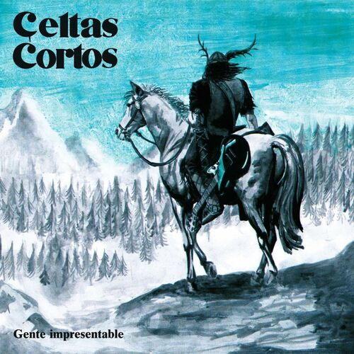

@SeptimoSevero

Foto álbum o videoclip
La senda del tiempo
- Celtas Cortos
Feeling: Nostalgic
Comentarios
Bua cada vez que escucho esta canción, siento que viajo en el tiempo. ¡Qué joya!
Los Celtas Cortos y su magia 🔥
Temooón